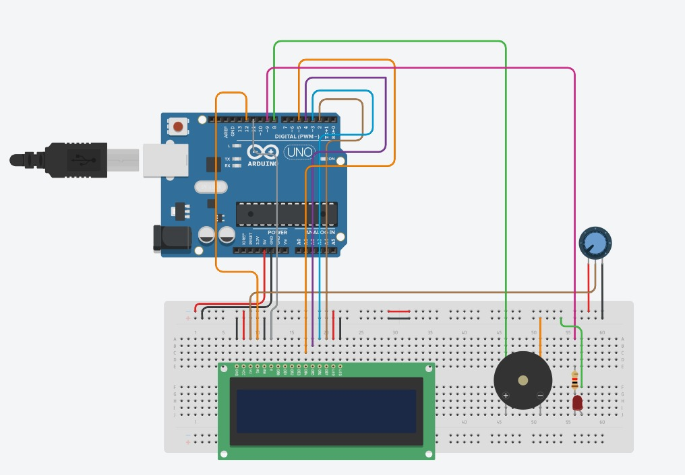

Education:
I am currently pursuing my engineering in information science from Dayanada Sagar college of Engineering Banglore.

For more infomation click here.
Projects:
Till now i have made few projects like Water pollution Detection using IOT,Driver Sleep Detection integrated with IoT.
For more infomation click here.